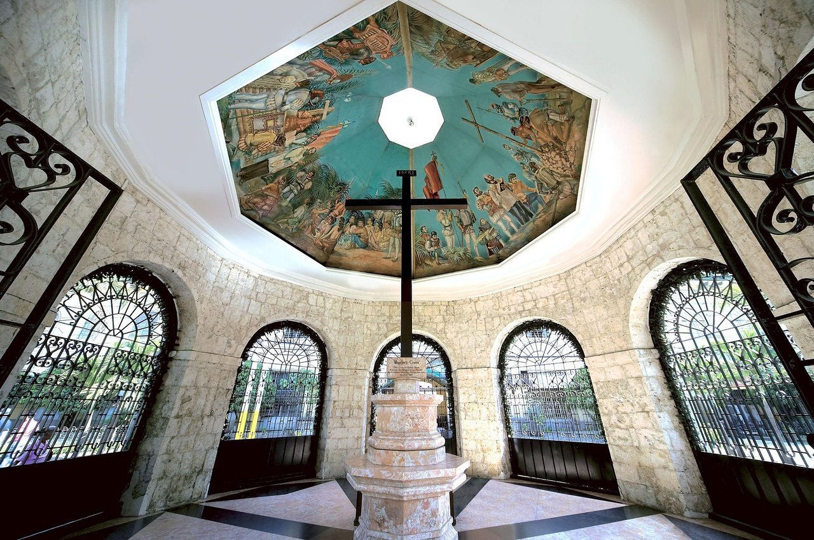

Magellan’s Cross Highlights





Magellan’s Cross stands as one of the most iconic historical landmarks in the Philippines. It was planted to celebrate the first conversion of Filipinos to Christianity by Ferdinand Magellan’s expedition. The original cross is believed to be encased inside the wooden cross on display to preserve its remains.
The cross is housed inside a small chapel with a beautifully painted ceiling that tells the story of Magellan’s arrival. This religious site is located right beside the Basilica del Santo Niño, adding to its cultural significance. Thousands of visitors come each year to witness the symbolic origin of Catholicism in the country.
Magellan’s Cross is not only a religious site but also a testament to the country’s colonial past. Many pilgrims light candles and pray at the site, believing in its spiritual value. It remains a powerful symbol of Cebu’s faith, heritage, and history.